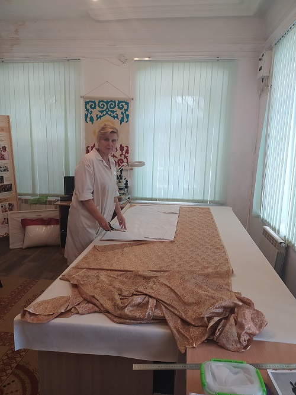

Established in 2019
UMAY International Research Laboratory for the Conservation and Restoration of Cultural Heritage
The UMAY International Research Laboratory for the Conservation and Restoration of Cultural Heritage is a specialised unit of the Institute of Archaeological Research at Margulan University. Established in 2019, the Laboratory combines archaeological research with the scientific examination, conservation and restoration of cultural heritage materials.
Its principal areas of work include archaeological textiles and other organic materials, field and laboratory conservation, interdisciplinary analysis, preventive conservation and the preparation of objects for museum display and long-term storage. The Laboratory works with materials from Kazakhstan and other regions of Eurasia, linking practical conservation with historical and technological research.
UMAY Laboratory also contributes to student education, specialist training and international cooperation. Through research projects, professional partnerships and practical programmes, the Laboratory supports the responsible preservation, documentation and interpretation of archaeological heritage.
The Laboratory is also available to support professional development through specialised training sessions, lectures, workshops and practical programmes tailored to the needs of universities, museums, heritage institutions and individual specialists.
Project: "Study and production of a replica of the robe from the Bolgan-Ana Mausoleum"Go to the UMAY Laboratory website